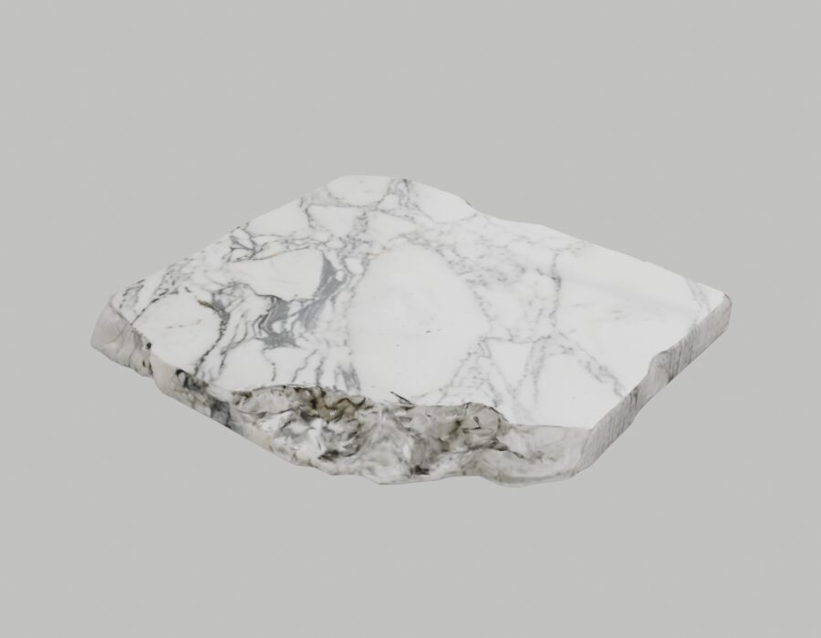
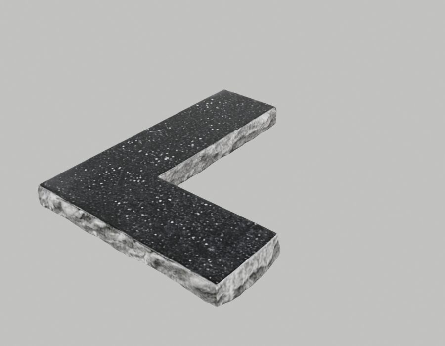
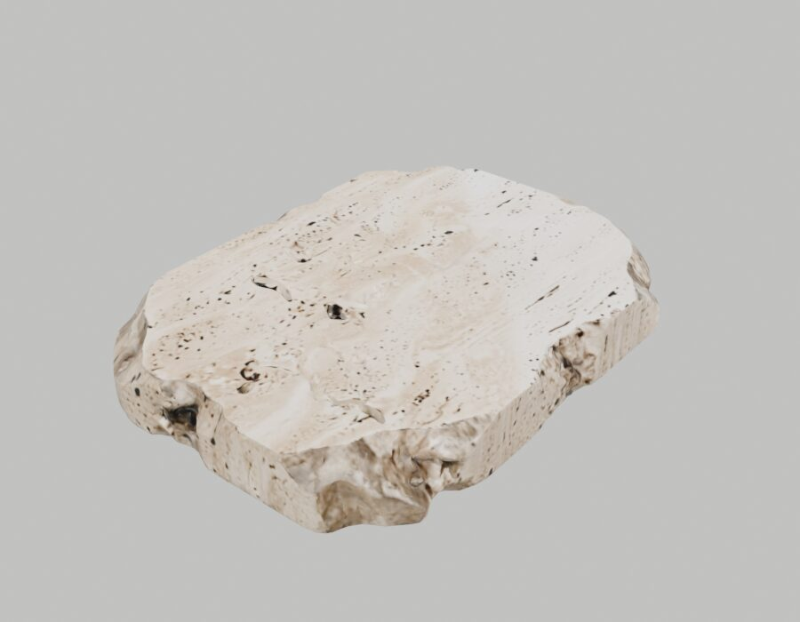
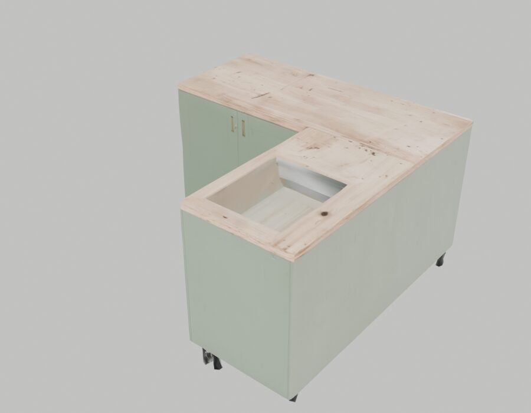
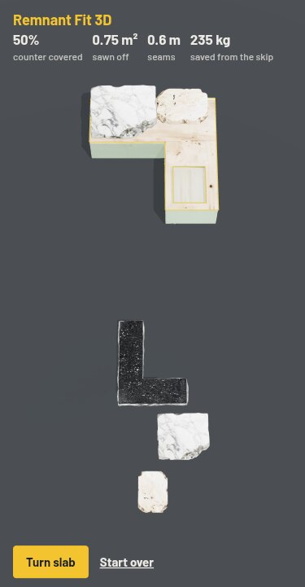

Project report · Manycore Aholo Global 3D AI Hackathon · Team "Design Master" (Alan De Bortolo, Design Master Solutions LLC)
Play: remnant-fit-3d.designmaster.workers.dev · Code: github.com/DesignMaster-Solutions/remnant-fit-3d
Stone shops cut kitchen and bathroom countertops from big slabs. What is left over (the offcuts, or "remnants") stacks up in the yard and a large share ends up in a skip, because a buyer cannot picture an odd-shaped piece of marble on their own counter. We build software for stone fabricators, and this is the question their customers ask most: "will that piece fit my kitchen?"
Remnant Fit 3D turns that question into a puzzle you play in the browser: cover a real kitchen counter with real-looking offcuts, losing as little stone as possible to the saw.
Every 3D object in the game is a Lux3D generation. The script lux3d/gen.py calls the Lux3D API (G1 text-to-3D, 30,000 faces), polls the tasks and downloads each GLB. Four tasks were generated (IDs 4502786, 4502793, 4502801, 4502808, about 3 minutes each):




Raw renders of the downloaded Lux3D meshes (Blender, report/render.py), before any processing.
The game has no hand-made level data. When it loads a Lux3D model it lays the mesh flat, scales it to real size and casts rays straight down on a 10 cm grid. Every ray that hits stone marks a cell of the slab. The same is done on the kitchen: rays that land on the counter top mark the area to cover, and rays that fall through the sink cut-out leave a hole. So a new Lux3D kitchen or a new offcut is a new level with zero extra work.
| Step | Input | Output |
|---|---|---|
| Generate | Text prompt per stone type and per kitchen | Lux3D GLB, ~30k faces |
| Optimise for web | Raw GLB, 4.6 to 6.3 MB | Web GLB, 1.0 to 1.1 MB each |
| Read outline | Web GLB, scaled to real size (counter run 3.2 m, 0.9 m high) | Boolean grid of 10 cm cells: slab shape, counter area, sink hole |
| Play | Grids + meshes in a three.js scene | Drag, turn, score |

Five offcuts sit in the rack (the same scan appears at two sizes, as in a real yard). Drag a slab onto the counter, turn it with one button, and try to cover the whole top. Rules, all in public/fit.js:
npm test, 3/3 passing): rotation, overlap rejection, scoring.test/drag.js) run inside the live page on a real phone through the game's own pointer handlers: a slab snaps onto the counter, an overlapping slab returns to the rack, turning works, and the score reads 50% covered, 0.75 m² sawn off, 0.6 m of seams, 235 kg saved.Each solved counter is a remnant sold instead of thrown away. The same pipeline (photo or description of a real offcut, Lux3D model, outline read from the mesh) is what a stone shop needs to show its yard online and let customers try pieces on their own kitchen.